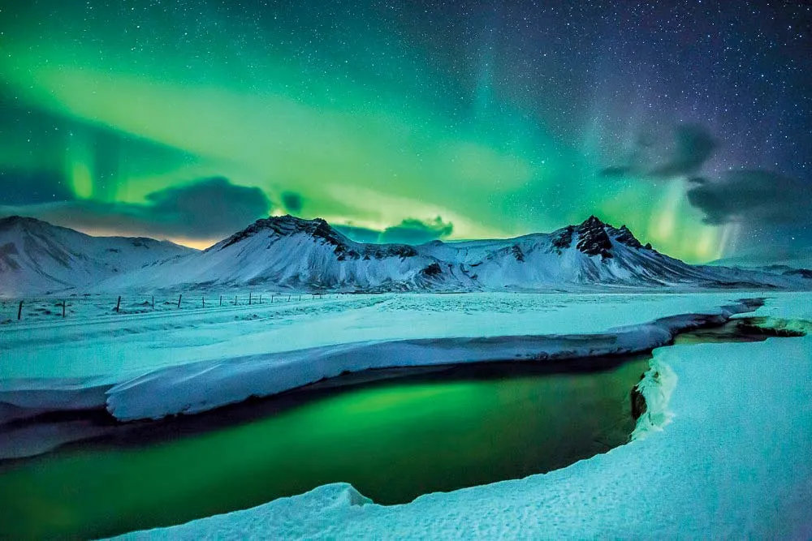

Machu Picchu

Grand Canyon
Iceland

Iguazu Falls

Santorini
|
Machu Picchu |
Grand Canyon |

Iceland |
Iguazu Falls |
Santorini |
 |
Nestled on the border between Argentina and Brazil, Iguazu Falls roars as a symphony of emerald
waters cascading over volcanic rock. Imagine 275 individual falls stretching across nearly three
kilometers, their thunderous plunges sending rainbows shimmering into the misty air.
|